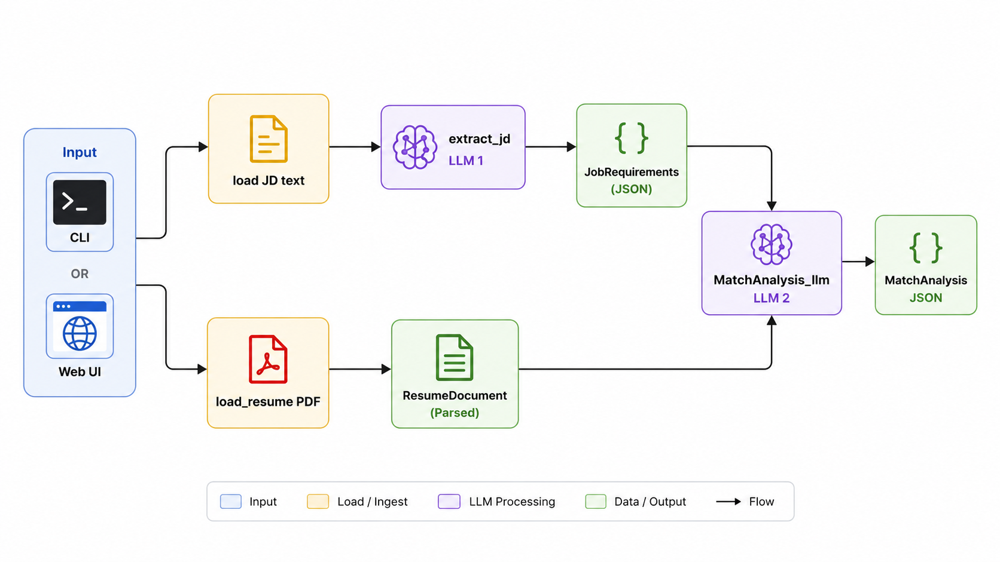

Load
The interface accepts JD text and loads the PDF through load_resume, returning a ResumeDocument.
Local LangChain pipeline
A focused, inspectable agent that compares a job description with a resume PDF—without sending candidate data to a cloud API.
01 · Architecture
The resume remains evidence text. The job description becomes the structured checklist that the matcher uses.

The interface accepts JD text and loads the PDF through load_resume, returning a ResumeDocument.
extract_jd calls LLM 1 and converts messy JD language into JobRequirements.
MatchAnalysis_llm calls LLM 2 with the structured JD JSON plus raw resume text.
The CLI prints JSON under --debug; the web UI presents metrics, evidence, and a JSON download.
Extraction needs faithfulness to the JD. Matching needs comparison and judgment. Separating them makes it possible to inspect whether a bad result came from the checklist or the comparison.
In scope · v1
Local Ollama · two LLM calls · PDF loading · CLI · optional Streamlit UI
Out of scope · v1
Cloud APIs · embeddings/RAG · ReAct tool calling · resume LLM extraction
02 · Interfaces
Both frontends wrap the same core functions. The UI does not fork the pipeline.
Paste a JD, upload a PDF, inspect results, and download structured JSON.
streamlit run web_app.pyRun repeatable file-based analysis and inspect intermediate output while debugging.
python -m resume_agent --jd … --resume … --debug| Flag | Meaning |
|---|---|
--jd | Path to the job description text file |
--resume | Path to a PDF resume |
--debug | Run extraction and matching, then print JSON |
--out | Reserved for future JSON file output |
03 · Data contracts
Pydantic models are the contract between the specialists, the CLI, the web UI, and any future LangGraph orchestration.
JobRequirementsLLM 1 outputrole · seniority · must_have_skills · nice_to_have_skills · notes
ResumeDocumentPDF loader outputraw_text · source_path · page_count
MatchAnalysisLLM 2 outputmatch_score · matched_skills · missing_skills · strengths · gaps · verdict · evidence
Structured output guarantees shape, not truth. Prompt quality, model quality, and deterministic post-checks still matter.
04 · Operations
Ollama provides the local model runtime; the application reads the selected model from .env.
ollama serve
ollama pull llama3.1:8b
python3 -m venv .venv
source .venv/bin/activate
pip install -e '.[web]'LLM_MODEL=llama3.1:8bKnown limitations
--out flag is not wired yet.Sensible next upgrades